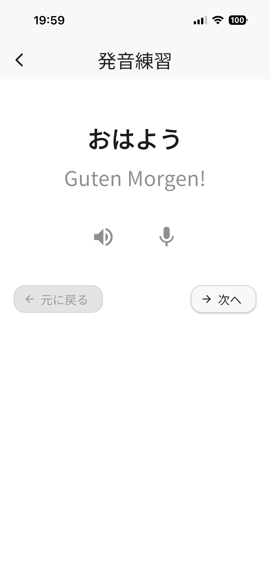
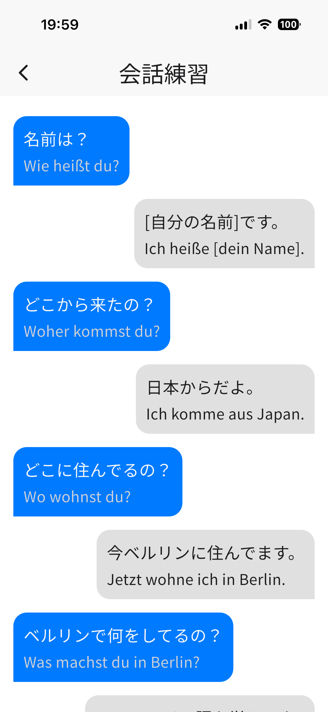
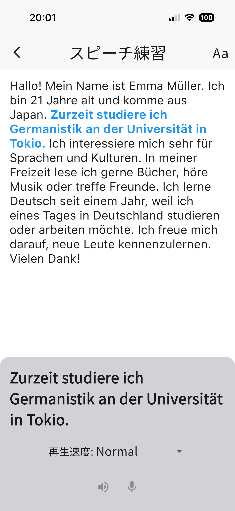
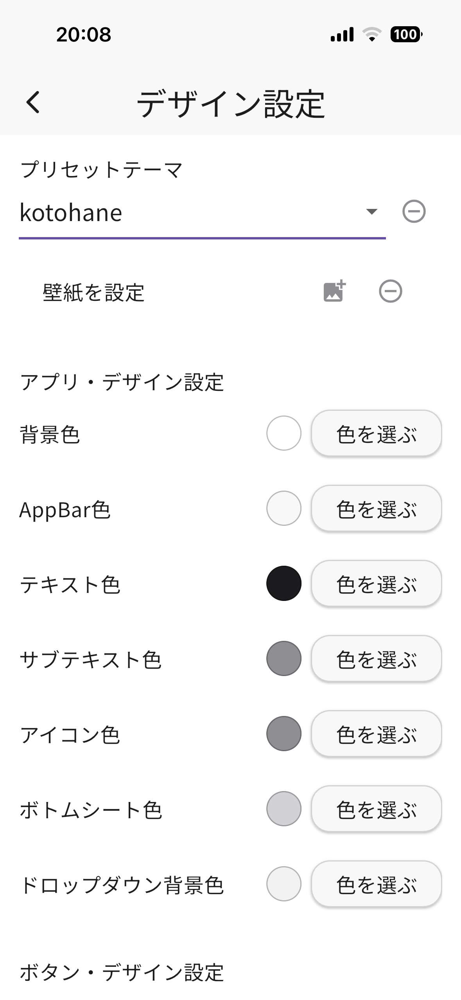

kotohane
外国語学習支援アプリ
アプリの特徴
- スマートフォンの音声合成（TTS）でお手本の発音を聞きながら練習できます。
- 音声認識（STT）で発音を判定し、練習記録を自動保存します。
- 単語・会話・スピーチの3種類の練習タイプに対応しています。
- 教員が授業の教科書に合わせて練習問題を作成できます。
- 現在はドイツ語に対応しています。今後、フランス語・スペイン語・中国語に対応する予定です。
- カレンダーで自分の練習状況を確認できます。
- 日本大学のNU-Mailアカウント（@nihon-u.ac.jp または @g.nihon-u.ac.jp）でログインして使用します。
単語の発音練習画面（Pronunciation）

- スピーカーボタンでお手本の発音を聞いてから、マイクボタンで録音して練習します。
- 認識結果と評価がその場で表示されます。
- 再生速度を調整できるので、自分のレベルに合わせて練習できます。
会話練習画面（Conversation）

- 教科書の会話文をチャット形式で表示します。
- 練習したいセリフをタップすると、お手本を聞いて発音練習ができます。
- L（左）とR（右）で話者を視覚的に区別して表示します。
スピーチ練習画面（Speech Practice）

- 教員が登録した文章、または自分で用意した文章でスピーチの練習ができます。
- 文章をセンテンス単位でタップして、1文ずつ集中して練習できます。
- フォントサイズを調整できます。
練習記録とカレンダー
- 練習した日がカレンダー上に言語の国旗で表示されます。
- 日付をタップすると、その日の練習内容を確認できます。
デザインのカスタマイズ

- 配色や壁紙を自分好みにカスタマイズできます。
- 複数のテーマプリセットから選べます。
動作環境
- iOS 16以上
- Android 8.0以上
- 日本大学のNU-Mailアカウントが必要です